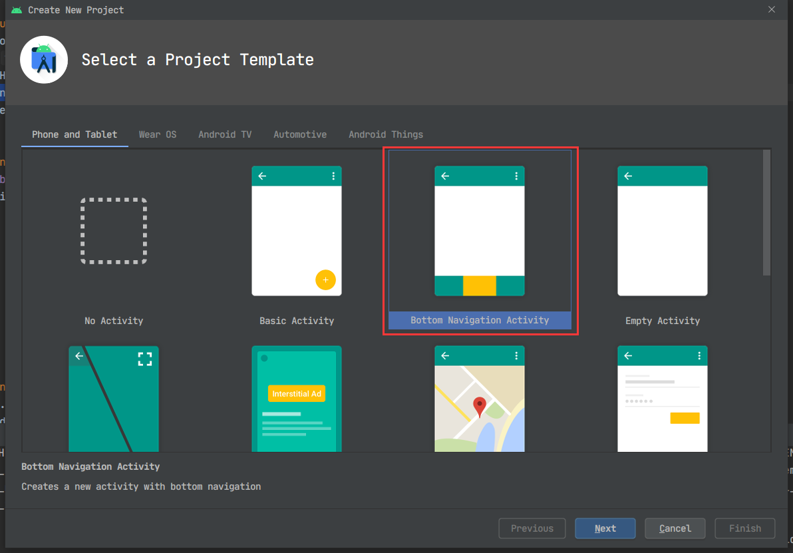
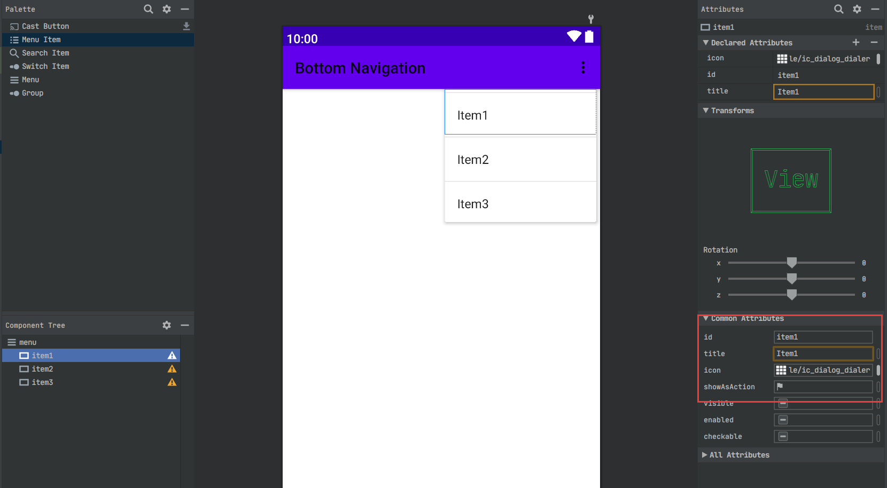
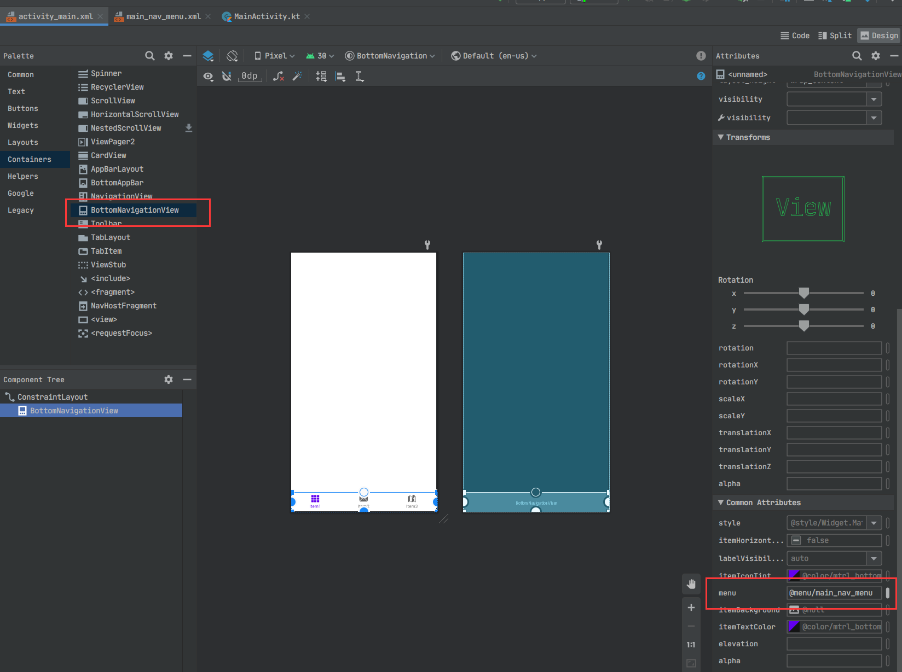
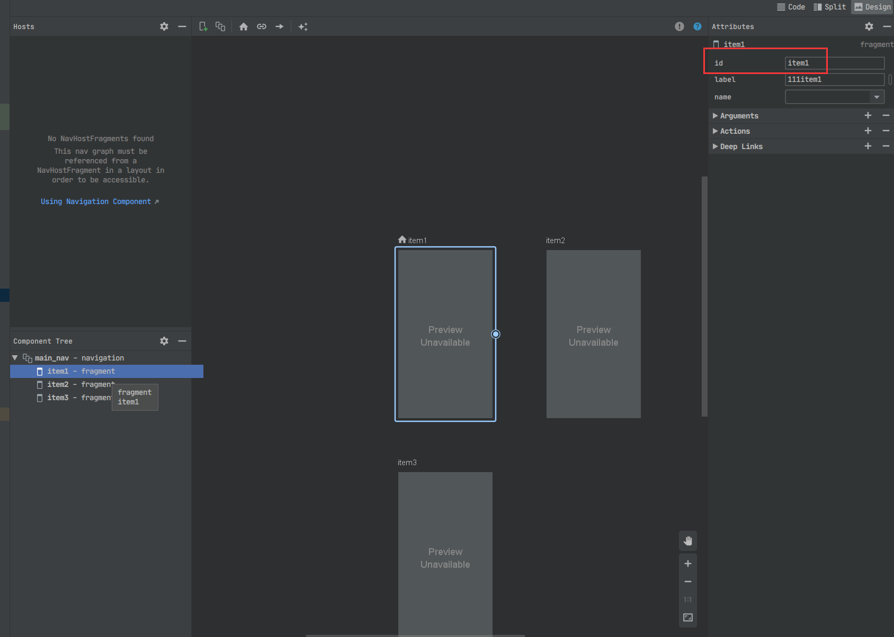

kotlin & android 笔记
更新
2020.12.21 解决 “在item2页面点击返回键会返回item1, 而非退出” 问题
之前笔记里（android navigation组件）记录整个导航组件时, 其中关于自定义返回导航只是简单一提， 并用于在MainActivity的回调里整体组织路由。
给Item2, Item3页面注册返回事件， addCallBack用(LifecycleOwner, OnBackPressedCallback)版本, 会检测生存期，在页面被销毁时自动删掉回调。OnBackPressedCallback 构造函数传入 Boolean 表示回调初始是否开启（isEnable）, 之后可以调用它的 setEnable 来改变状态。
1 | // 仓库已经更新 |
原文：
λ：
1 | # android bottom navigation demo |
底部导航配合多页面切换是常见逻辑，微信，qq，抖音，淘宝等等，常见app里几乎都有这种设计。
底部导航栏涉及到图标和标题在点击时的变化（颜色，大小，选中与未选中图标变化）
而上方的页面切换有两个常用方案：
用之前说过的 navigation组件
参考 使用 NavigationUI 更新界面组件。 会发现用navigation组件实现这套东西时可以一行代码搞定。甚至在 创建新Android Activity 时提供了生成版本：

这本身就可以当个demo。包含了底部栏如何配置，NavHost怎么设置。而且其中的Fragment还有ViewModel。
但有一个问题就是每次切换页面，Fragment都是重新构建的，就算数据可以在ViewModel活着，但是其他状态还是需要自己维护，比如列表滑动位置。
所以改用ViewPager2， 通过设置offscreenPageLimit来缓存页面。ViewPager2底层是RecyclerView, 用来替代之前的ViewPager, 尽力保持两版接口一致，同时解决之前遗留的很多棘手问题。
1. 底部导航栏：BottomNavigationView
- 创建新的
android Resource file, 类型选择menu。 添加menuItem

- 在
activity_main.xml添加BottomNavigationView控件，同时设置menu参数，之前设置的menuItem标题和图标会在底部栏直接显示。同时可以通过底部栏的itemIconTint等参数，设置选中态与未选中态的区别

2. 页面切换：
方案1: navigation
添加
NavHost。如 navigation组件 中方式，添加导航图与目的地。注意
id与menu中相同，navController通过id将导航图与底部栏链接

1 | // MainActivity |
点击底部栏便可以切换页面。
方案2: ViewPager2
点击第一页按钮，跳转新的Activity，将页面上方替换为ViewPager2, 其他不变。
ViewPager2设置adapter, 负责页面切换和组织(FragmentStateAdapter)。ViewPager2设置offscreenPageLimit， 起到缓存作用ViewPager2注册OnPageChangeCallback，页面滑动切换时回调，相当于ViewPager中OnPageChangeListener。 页面切换完成时，设置底部导航栏对应切换。- 如果不想滑动切换页面, 设置
ViewPager2的isUserInputEnabled = false, 不必注册回调 - 底部导航栏设置点击事件，
ViewPager2跳转对应页面。
打印log验证页面是否保活。
1 | class SecondaryActivity : AppCompatActivity() { |